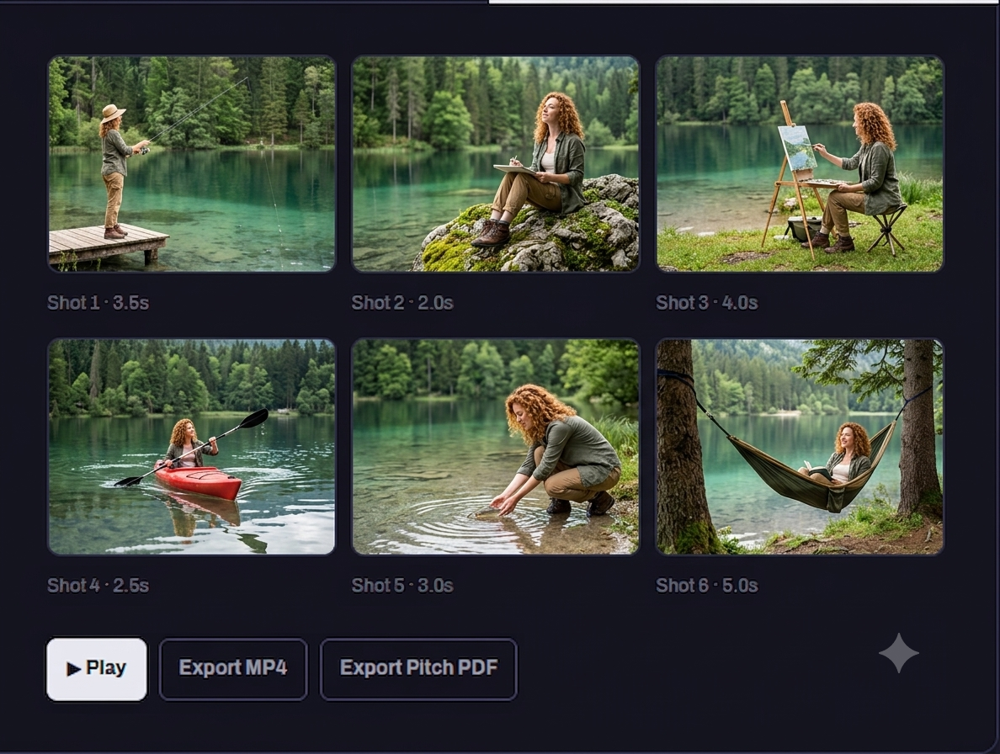

For Advertising Creatives
Territory turns one creative brief into three genuinely distinct campaign territories, locks a consistent visual look for each, and renders a timed storyboard you can play for a client the same day the brief landed.
Free plan: 1 project, 1 territory. Studio is $29/mo, cancel anytime.
The Workflow
Structured brief in, three deliberately different creative directions out. Choose the one that's right, or write your own and Territory analyzes it the same way.
See how generation worksPick a territory and lock its style, cast, and palette into a reusable look profile. Every panel generated after this point stays visually consistent by construction, not by luck.
See the look profileBeat sheet, storyboard panels, scratch voiceover, and a music bed — assembled into a rough-cut board-o-matic and a pitch PDF, ready to send.
See export optionsEmbr (Demo)
Pick one or more directions to develop — each keeps its own look profile, beat sheet, and animatic.
We open on someone lying in bed at 11pm, wide awake and furious about it — then rewind through the day in reverse, showing every decision that led here, ending on the 3pm energy drink that seemed harmless at the time. The film ends on Embr instead: same moment, same person, but asleep by 11.
Structure: reverse chronology, two parallel versions of the same evening
Continue To Look ProfileNatural light, 35mm grain, warm neutral grade — quiet and unhurried.

Why It's Different
The generation step is built to force divergence, not just reword the same concept three ways.
The look profile injects into every image call, so panels within a territory hold together — not perfect likeness, coherent direction.
A played board with VO and music, plus a clean PDF — the two formats a client meeting actually needs.